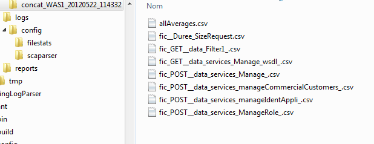

ScaLogParser : Remplir les onglets
ScaLogParser : Onglet « Enregistrements »
ScaLogParser : Onglet « Values »
ScaLogParser : Onglet « Pivots »
Avec ce menu, on transforme un fichier de logs horodaté en fichier csv. Ce fichier csv est ensuite visulisable à l 'aide du menu Viewers.
Le Menu ScaLogParser ( en fait un Button) ouvre un FileChooser customisé dans le répertoire %workspace/<Project><scenario_courant>/logs
Il faut choisir un fichier de logs.
Il y a 3 possibilités pour configurer avant de lancer le parsing :
sans template, ( ex-nilho) => ComboBox vide
avec un template local, seulement valide pour le projet local => General Template non selectionné et choisir un template local existant dans la ComboBox
avec un template général, partagé par tous les projets => General Template selectionné et choisir un template général existant dans la ComboBox
Les écrans ci-dessous, montrent un cas général sans template.
Après avoir cliqué sur le bouton OK, l'écran ci-dessous apparaît :
Parsing Start Date / Parsing End Date :nouveau en version 1.2.0 pour définir une date de début et de fin de parsing. C'est utile en cas de tres gros fichier de logs. Voir tableau ci-dessous.
Dans le TextArea en haut de la fenêtre, les 20 premières lignes du fichier à parser sont affichées.
En dessous, il y a un Tabbed Pane avec 4 onglets.
Le premier onglet a les fonctions suivantes :
définir un enregistrement dans le fichier de logs ( Début/Fin d'enregistrement, Locale, Inclusion, Exclusion…)
comment retrouver la date de l'enregistrement (d'une manière explicite ou implicite).
définir le format du fichier csv de sortie( Date format, separateur, ...)
graphe automatique ou pas après le parsing
File In paramètres :
|
Paramètres |
Signification |
Exemple |
|
Path File In |
Chemin complet du fichier logs d'entrée. Automatiquement rempli par swingScaViewer quand le fichier a été choisi |
|
|
Step of Aggr in ms |
Durée de la période d'agrégation exprimée en millis-secondes. |
1000 |
|
Start of Enreg (Regex) |
Expression régulière ( Perl Regex) pour trouver le début de l'enregistrement. Obligatoire. |
\d{4}-\d{2}-\d{2} |
|
End of Enreg (Regex) |
Expression régulière ( Perl Regex) pour trouver la fin de l'enregistrement Si ce champ est vide, cela signifie que chaque ligne est un enregistrement |
S'il n'y a pas de fin évidente d'enregistrement, on peut mettre comme fin d'enregistrement le même pattern que le début d'enregistrement. L'outil dans ce cas en tient compte et il n'y a pas de perte d'enregistrement . |
|
Regex including enregs |
Expression régulière permettant d'inclure seulement des types d'enregistrement |
La fonctionnalité Exclude a priorité sur la fonctionnalité Include |
|
Regex excluding enregs |
Expression régulière permettant d'exclure des types d'enregistrement |
La fonctionnalité Exclude a priorité sur la fonctionnalité Include |
|
Step within enregs or regex for step |
Utilisé quand Explicit Date n'est pas sélectionné Définit l'incrément par rapport au paramêtre fileIn.startDate de 2 façons. => par une expression régulière val , une valeur de durée entre 2 enregistrement ( l'unité est donnée par le champ Unit of Step) |
(?![^=]=)\d+
val=1000
(*) Voir plus d'explications en dessous de ce tableau. |
|
Locale English |
Choix de la Locale du fichier d'entrée ( Pour les dates et la représentations des nombres décimaux) |
Sélectionner English si possible. |
|
Explicit Date |
Si sélectionné, cela signifie que chaque enregistrement est horodaté. Sinon, la date doit être calculé implicitement. |
Sélectionner si possible. |
|
Start Date ( DateInMillis or Implicit case) |
Definition de la date de début, avec un format de type Java DataFormat défini daans le champ Java Format of Date
|
1970/01/01 00:00:00 ( 0 du TimeStamp) Utilisé dans le cas où Implicit Date n'est pas sélectionné. Dans ce cas, un incrément doit être défini Utilisé aussi dans le cas où Regex of Date est positionné à dateInMillis avec des dates explicites. |
|
Unit Of Step |
Unité d'incrément. Les valeurs possibles sont : s, ms, micros, nanos |
ms |
|
Regex of Date |
Expression régulière pour extraire la date de l'enregistrement. La date doit êtte dans le premier groupe sélectionne. Dans le cas de la date en timestamp en millis, le pattern est positionné à dateInMillis. |
^([^:]+[^ ]+) si dateInMillis dans java date format, on peut mettre ici 2 regex pour extraire en 2 phases. Les 2 regex sont séparées par un espace ( Aucune des 2 regex ne doit contenir d'espace, on remplace par \s) |
|
Java Format of Date |
Donne Java DateFormat des enregistrements du fichier de logs.
|
[dd/MMM/yyyy:HH:mm:ss Z] ou dateInMillis ou dateInMillis,<mult> mult=1000 si la date est en secondes Le format dateInMillis , calcule la date , à partir de la date fournie dans le champ Start Date ( DateInMillis or Implicit case) |
|
Parsing Start Date |
La date de début de parsing |
Le format doit être : yyyy/MM/dd HH:mm:ss
|
|
Parsing End Date |
La date de fin de parsing |
Le format doit être : yyyy/MM/dd HH:mm:ss
Si la date de début >= la date de fin, il n'y a pas de contrôle de date. Ainsi avec les 2 dates positionnées par défaut à 1970/01/01 00:00:00, il n'y a pas de contrôle de date. |
File Out paramètres :
|
Paramètres |
Signification |
Exemple |
|
Folder for Files Out |
Chemin complet du répertoire du fichier csv résultat. Automatiquement rempli par swingScaViewer quand le fichier a été choisi. |
|
|
Field separator |
Séparateur des champs |
; |
|
Java Date Format out |
Format DateFormat Java du fichier csv résultat |
yyyy/MM/dd HH:mm:ss |
|
Locale English |
Choix de la Locale du fichier csv résultat ( Pour les dates et la représentations des nombres décimaux) |
Sélectionner English si possible. |
|
Generate AllAverages Only |
Si sélectionné, il y a génération d'un seul fichier csv des moyennes de chaque valeur.. |
Le nom du fichier csv résultat est allAverages.csv |
Paramètres avancés :
|
Paramètres |
Signification |
Exemple |
|
Numbers of Actors |
Nombre d'acteurs / Threads ( akka Actors) pour traiter le fichier de log |
2 ou nb cores or nb cores * 2 ( si hyperthreadé) |
|
Is start date |
Si sélectionné, cela signifie que la date de l'enregistrement est celle du début de la requête |
Dépend du type de log ( Apache, Tomcat horodate le début de la requête) |
|
correction to date |
Si la première valeur de l'onglet Values est de type durée ( unité s,ms,millis …), on peut corriger la date selon 3 stratégies : 0 => pas de modification de la date 1 => ajout de la durée à la date |
0 est le cas le plus courant |
|
View AllAverages after parsing |
Si sélectionné, le fichier csv des moyennes est visualisé dans Viewer à la fin du parsing |
Checked/Unchecked |
|
Debug Mode |
Pour débugger sur une petite extraction du fichier de logs. La trace générée est le fichier <swingScaViewer_Home>/logs/scaviewer.log |
Checked/Unchecked |
|
Exhaustive Pivots Parsing |
Utile quand 2 pivots ont des regex qui s'incluent. Exemple : GET\s/MyHome/ GET\s/ Si non selectionné, l'URL correspondant à la première regex n'est pas parsée par la seconde regex. |
Checked/Unchecked Si on est sûr que toutes les regex s'excluent, il vaut mieux laisser le radio-bouton non sélectionné, le parsing est plus rapide. |
|
Generate Enregistrements to a File |
Aide aussi pour le debugging, pour voir si les enregistrements sont bien définis, utiles notamment quand les enregistrements sont sur plusieurs lignes. |
Checked/Unchecked |
L'analyse des access-logs est basé sur l'utilisation des expressions régulières décrites dans la Javadoc du JDK.
Voir la Javadoc de la classe Pattern :
http://java.sun.com/javase/6/docs/api/java/util/regex/Pattern.html
(*) Les différentes formes de l'incrément sont :
<expression régulière> :
Donner une expression régulière pour matcher l'incrément. L'outil « Test regex » peut aider.
val=<valeur Constante de l'incrément>
Rentrer la valeur constante de l'incrément, l'unité est donnée par le paramètre Unit of Step . A utiliser quand il n'y a pas de date explicite pour chaque enregistrement et que la période entre 2 enregistrement est connue ( Exemple vmstat avec une période de 10s, ...)
L'onlget Values est divisé en 5 colonnes ;
Name Value : nom de la valeur suivie(Le nom est libre)
First Regex / Function : moyen d'extraction de la valeur. Il y a deux moyens :
regex ( moyen par défaut montré dans le screen-shot ci-dessus). Rentrer la regex pour extraire la valeur seule ou incluse dans une chaine de caractère ; dans ce dernier cas on pourra appliquer une seconde regex (Second Regex / Parameters)
function=<nameOfClass> C'est une fonctionnalité avancée, qui permet d'utiliser une sorte de plugin de swingScaViewer. Utiles quand les valeurs ne peuvent être extraites directement du fichier de logs. Exemples : différence de 2 valeurs, calcul du througput du Garbage Collector de la JVM, (**) Voir ci-dessous l'explication détaillé de cette fonctionnalité.
Second Regex / Parameters : Une expression régulière si necessaire ou des paramêtres dans le cas de l'utilisation du mot clé function=
Unit : unité de la valeur extraite.
Change Scale : permet d'adapter l'echelle des valeurs nà l'unti désirée ( mettre des nombres entiers ou décimaux dont le séparateur est le point => . )
(**) mot clé function :
C'est une fonctionnalité avancée et nécessite de comprendre la programmation en Scala.
On doit écrire une Classe Scala avec le package par défaut, avec 2 méthodes dont les prototypes sont données ci-dessous :
def metInit(tab:Array[String]=null)
def retour(params:Array[String]):Double
Il y a des examples de classes Scala dans le répertoire <swingScaViewer_Home>/myPlugins . Les classes ( byte-code) doivent être mises dans l'archive jar : <swingScaViewer_Home>/myPlugins/myPlugins.jar. Cette archive jar doit être aussi positionné dans le classpath de la JVM dans les scripts de lancement swingScaViewer.cmd ( .ksh).
La valeur de retour de la méthode retour est un Double ( Cela peut être aussi la valeur Double.NaN, ce cas est traité).
Dans la colonne First Regex / Function , on met le nom de la classe (sans le suffixe .class) :
function=Add2Values
Dans la colonne Second Regex / Parameters, on positionne tous les paramètres nécessaires à l'exécution de la calsse. Ces parametres sont séparés par un séparateur défini comme premier caractère du champ. Faire attention lors du choix du séparateur d'éviter des confusions avec les valeurs de parametres. Dans le cas où il n'y a pas besoin de parametre, positionner ce champ à ;dummy ( sinon il y aura des erreurs) .
Exemple :
,param1,parma2,param3
, est le séparateur, param1 à param3 les paramètres.
L'enregistrement est passé par défaut à la classe, il s'agit du paramètre 0 de la méthode retour, param1 et suivant sont rajoutés à cette méthode.
Tip :
Quand le nom d'une classe commence par Conc, la fonction peut être utilisé en mode multi-threadé pour le parsing. Si seulement une classe ne commence pas par Conc, le parsing se fera en mode mono-threadé.( Le champ Nb of Actors est automatiquement positionné à 1)
Voir dans le document pdf § Annexe des exemples de fonctions.
Qu'est qu'un “pivot” ?
Dans un enregistrement, il y a d'autres informations interessantes que les valeurs numériques, qui permettent de les classer. Exemple URLs dans les Access Logs Apache , ou les access logs d'aures WAS , un Pivot peut être un pattern spécifique comme montré ci-dessus.
Cet onglet a 3 colonnes :
Name :
Un nom libre pour le Pivot
First Regex : on peut mettre une chaine de caractère ou un pattern pour extraire la valeur du pivot. Si on ne peut pas extraire directement le pivot avec cette première regex, on peut appliquer une seconde regex (Second Regex) sur cette première extraction.
Second Regex si nécessaire pour extraire le pivot final du premier matching.
Hint 1 : Si auparavant, on a parsé le fichier de logs à l'aide du menu scaFileStats ( voir le document pdf) et sauvé le résultat dans un fichier csv dans le répertoire logs , en clickant droit dans la table de l'onglet Pivots, et ensuite en choisissant le fichier csv créé, les lignes de la table de l'onglet Pivots se remplissent automatiquement.

Hint 2 : Pour la colonne First Regex , si on peut utiliser un String sans pattern regex (comme \s\? ...) , le traitement est plus rapide.
Principe de génération des fichiers résultats dans le répertoire csv
Si on a 2 valeurs dans l'onglet Value ( Duree and SizeRequest) et 6 Pivots idans l'onglet Pivot, les 8 fichiers générés sont donnés ci-dessous :

fic_Duree_SizeRequest.csv => global, sans Pivot
Les 6 derniers fichiers csv sont liés au Pivot configuré .
allAverages.csv ( Contient la colonne average des 7 fichiers ci-dessus)
Help Onglet:
Contient ce texte d'aide. Le fichier <swingScaViewer_Home>/config/scaViewer.properties permet de choisir la langue => variable scaviewer.lang.help

TestRegex:
Le bouton TestRegex permet de tester des regex dans une boite de dialogue .Voir le menu Tools dans le document pdf. See the
Save :
Le bouton,Save sauve uration et peut être ré-utilisé pour reparser le meme fichier ou créer un template.
SaveAsTemplate :
Le bouton SaveAsTemplate permet de sauver une configuration template, ré-utilisables pour d'autres fichiers de logs ayant la même structure d'enregistrement.
On peut sauvegarser ce template dans le contexte du projet ( RadioButton General Template ? non-sélectionné), ou partageable par tous les projets dans un Contexte Général quand le RadioButton General Template ? est sélectionné
Parse Logs :
Le click sur Parse démarre le parsing :

L'écran ci-dessus est celui de la fin de parsing, sans graphe automatique du fichier allAverages.csv parce que le radioButton View AllAverages after parsing n'est pas sélectionné
Si le radio-bouton View AllAverages after parsing est sélectionné avant de lancer le parsing, le fichier allAverages.csv est graphé comme montré ci-dessous :
Ci-dessous , le tableau décrit le principe d'utilisation de quelques plugins / functions .
Les plugins peuvent être ajouté dans le répertoire plugins et dans l'archive plugins/myPlugins.jar pour ce qui concerne le byte-code. Lire le manuel pdf qui décrit comment écrire un plugin en Scala.
|
Plugin name |
Description |
Parameters |
Comments and Examples |
|---|---|---|---|
|
ComputeHeapGC1 |
Parse les GC logs HotSpot, quand la stratégie GC1 est active. Mono-threaded |
;<le_nomDeLaValeur> |
Le nomDeLaValeur est l'un des noms ci-dessous : BeforeGCHeapTotal BeforeFullGCHeapUsed BeforeFullGCPermGenUsed BeforeYoungGCHeapUsed BeforeYoungGCPermGenTotal BeforeYoungGCPermGenUsed NbYoungGC NbFullGC AfterYoungGCHeapTotal AfterYoungGCHeapUsed AfterYoungGCPermGenTotal AfterYoungGCPermGenUsed ParallelTime AfterFullGCHeapUsed AfterFullGCPermGenUsed DurationFullGC DurationYoungGC |
|
ConcCompute2Values |
Calcul de valeur à partir de 2 valeurs extraite d'un enregistrement 2 regex pour extraire chaque valeur. Opérateur peur être un des suivants : “+”,”-”,”*”,”/” Multi-threaded |
;<regexp1-value1>;<regexp2-value1>;<regexp1-value2>;<regexp2-value2>;<op> |
;value1=\d+\.\d+;\d+\.\d+;value2=\d+\.\d+;\d+\.\d+;+ |
|
ConcCountItems |
Compte les items dans un enregistrement Multi-threaded |
;<regexpItem> |
;locked |
|
ConcTuxCloptr |
Exemple d'un plugin customisé : Récupère les durées d'exécution des services Tuxedo quand l'option Clopt -r est positionné (Tuxconfig) Nécessite un paramètre « fantôme » (dummy) |
;dummy |
;dummy |
|
TraiterHotspot5And6 |
Parse le GC logs HotSpot, qunad la stratégie Parallel ou CMS est activée Mono-threaded |
;<le_nomDeLaValeur> |
Le nomDeLaValeur est l'un des noms ci-dessous : sizeYoungGenerationBefore sizeYoungGenerationAfter sizeOldGenerationBefore sizeOldGenerationAfter sizeHeapBefore sizeHeapAfter sizePermGenBefore sizePermGenAfter minorGCDuration throughput fullGCDuration cmsConcurrentMarkDuration cmsConcurrentSweep cmsConcurrentPreclean fullGCSizeYoungGenerationBefore fullGCSizeYoungGenerationAfter fullGCSizeOldGenerationBefore fullGCSizeOldGenerationAfter fullGCSizeHeapBefore fullGCSizeHeapAfter sysTimeSpent userTimeSpent realTimeSpent |
Ci-dessous le code source de ConcCompute2Values :
/*Copyright
2012 Jean-Louis PASTUREL
*
* Licensed under the Apache
License, Version 2.0 (the "License");
* you may not use
this file except in compliance with the License.
* You may obtain
a copy of the License at
*
*
http://www.apache.org/licenses/LICENSE-2.0
*
* Unless required
by applicable law or agreed to in writing, software
* distributed
under the License is distributed on an "AS IS" BASIS,
*
WITHOUT WARRANTIES OR CONDITIONS OF ANY KIND, either express or
implied.
* See the License for the specific language governing
permissions and
* limitations under the License.
*/
class
ConcCompute2Values {
def metInit(tab:Array[String]=null) {
//
To reinitialise static variable if necessary
// Nothing to do
here
}
/**
*tabStr(0) is the record to be treated.
Afterwards the regex by tuple of 2 items for an extraction in two
phases
* regex tabStr(1) and tabStr(2) to extract the first
value
* regex tabStr(3) and tabStr(4) to extract the second
value
* tabStr(5) is the operand (“+”,”-”,”*”,”/”)
* @param tabStr
* @return
*/
def
retour(tabStr:Array[String]):Double=
{
var
retour=Double.NaN
// extract first value
var
regex1=tabStr(1).r
var ext1=regex1.findFirstIn(tabStr(0))
var
val1=0D
var val2=0D
if (None != ext1) {
//
println("ext1Val1="+ext1.get)
val regex2=tabStr(2).r
val
ext2=regex2.findFirstIn(ext1.get)
if (None != ext2) {
val1 =
ext2.get.toDouble
} else {
return Double.NaN
}
} else
{
return Double.NaN
}
// extract second
value
regex1=tabStr(3).r
ext1=regex1.findFirstIn(tabStr(0))
if
(None != ext1) {
val regex2=tabStr(4).r
val
ext2=regex2.findFirstIn(ext1.get)
if (None != ext2) {
val2 =
ext2.get.toDouble
} else {
return Double.NaN
}
} else
{
return Double.NaN
}
//println ("tabStr(0)
="+tabStr(0))
//println ("val1="+val1+"
;val2="+val2)
// return the result of the operation
tabStr(5)
match {
case "+" => val1 + val2
case "-"
=> val1-val2
case "/" => if (val2 !=0) val1 / val2
else Double.NaN
case "*" => val1 * val2
case _ =>
Double.NaN
}
}
}
Ci dessous quelques exemples de regex pour extraire des valeurs d'une ligne :
10.170.227.191 - - [21/Jan/2008:18:55:26 +0100] "POST /synthetic/services/ConsommationPort HTTP/1.1" 200 2433 – 5087
On doit lire depuis le début de la ligne ( caractère ^ ) et ensuite on doit trouver un ou plusieurs chifrres suivis par un point ( \d+\.) , ceci répété 3 fois, l'ensemble se terminant par un ou plusieurs chiffres ( \d+).
Le caractère point doit être « échappé » car c'est un caractère spécial pour les regex.
on extrait ainsi une adresse IP au début de la ligne.
On doit lire depuis le premier crochet ouvrant ( \[ ) qui doit être « échappé » car c'est un caractère spécial pour les regex , et ensuite on prend tous les caractères qui ne sont pas des crochets fermants. A noter que dans ce contexte le caractère ^ est la négation quand il n'est pas le premier caractère de la regex => ( [^\]]+ ). Et l'ensemble du matching est terminé par le crochet fermant ( lui aussi échappé pour les raisons évoqués ci-dessus) ( \] )
Cette regex extrait la date de la ligne :
Note : noter la différence quand le caractère ^ est placé ou pas en tête de regex.
Doit être lue depuis le premier double-quote ( " ) et ensuite tous les caractères qui ne sont pas des doubles quotes ( [^"]+ ) , ensuite une double-quote ( " ) , ensuite un ou plusieurs espaces ou tabulations ( \s+ ), l'ensemble terminé par 3 chiffres ( \d{3} ) .
Cette regex extrait l'URL et le status http de la ligne :

Doit être lu à partir de la fin de la ligne ( la fin de la ligne est désigné par le caractère $ ), avant la fin de la ligne un ou plusieurs chiffres ( \d+ ) et avant un ou plusieurs espaces ou tabulations ( \s+ ) .
Cette regex extrait le dernier nombre de la ligne, pour cette log Apache, cela correspond à la durée de la requète en micro-secondes.